library(gsheet) # Importação dos dados na nuvem
library(dplyr) # Manipulação
library(readxl) # Improtação de dados no computador
#library(vegan) # Gráfico de HeatMap
library(ggthemes) #Tema de fundo do gráfico
library(tidyverse) # Conjunto de pacotes
library(cowplot) # theme
library(writexl) #Exportação de dados
library(ggalluvial)
library(ggplot2) # Gráficos
library(lme4) # GLM
library(glmmTMB) #GLMM
library(rnaturalearth)
library(ggplot2)
library(ggridges)
library(performance)
library(DHARMa)
library(PresenceAbsence)
library(caret)
library(lmtest)Used packages
#Data importation
population = gsheet::gsheet2tbl("https://docs.google.com/spreadsheets/d/1YSK-g-vGZLTVZBPNpH0mo8oQZ6FkMH8xwdb-bs-ee2s/edit?usp=sharing")
#Total abundance in falcon tube (20 mL)
population$quantity = 6.66*population$quantity
population$quantity =as.integer(population$quantity)
population$quantity =as.numeric(population$quantity)#Incidence
By samples
#Incidence by samples
population_incidence_samples = population %>%
filter(quantity>0) %>%
group_by(genus,samples) %>%
summarise(
n = n()
)
count(population_incidence_samples)# A tibble: 21 × 2
# Groups: genus [21]
genus n
<chr> <int>
1 Anguinidae 97
2 Aphelenchoides 211
3 Aphelenchus 288
4 Belonolaimidae 1
5 Criconematidae 78
6 Helicotylenchus 317
7 Hemicycliophora 19
8 Heterodera 58
9 Hoplolaimus 3
10 Longidoridae 4
# ℹ 11 more rowsBy municipality
#Incidence of genus by city
population_incidence_city = population %>%
group_by(genus,city) %>%
summarise(
n = n()
)
count(population_incidence_city)# A tibble: 21 × 2
# Groups: genus [21]
genus n
<chr> <int>
1 Anguinidae 24
2 Aphelenchoides 25
3 Aphelenchus 26
4 Belonolaimidae 1
5 Criconematidae 21
6 Helicotylenchus 26
7 Hemicycliophora 9
8 Heterodera 13
9 Hoplolaimus 3
10 Longidoridae 2
# ℹ 11 more rowsBy region
#Incidence by region
population_incidence_region = population %>%
filter(!region %in% c("North","Northwest")) %>%
group_by(genus,region) %>%
summarise(
n = n()
)
population_incidence_region %>%
filter(region == "East") %>%
summarise()# A tibble: 19 × 1
genus
<chr>
1 Anguinidae
2 Aphelenchoides
3 Aphelenchus
4 Criconematidae
5 Helicotylenchus
6 Hemicycliophora
7 Heterodera
8 Hoplolaimus
9 Longidoridae
10 Meloidogyne
11 Paratrichodorus
12 Paratylenchus
13 Pratylenchus
14 Rotylenchulus
15 Rotylenchus
16 Scutellonema
17 Trichodorus
18 Tylenchidae
19 Tylenchorhynchuscount(population_incidence_region)# A tibble: 21 × 2
# Groups: genus [21]
genus n
<chr> <int>
1 Anguinidae 4
2 Aphelenchoides 4
3 Aphelenchus 4
4 Belonolaimidae 1
5 Criconematidae 4
6 Helicotylenchus 4
7 Hemicycliophora 4
8 Heterodera 3
9 Hoplolaimus 2
10 Longidoridae 2
# ℹ 11 more rowsBy tillage
#Incidece by tillage
population_incidence_tillage= population %>%
group_by(genus,tillage) %>%
summarise(
n = n()
)
count(population_incidence_tillage)# A tibble: 21 × 2
# Groups: genus [21]
genus n
<chr> <int>
1 Anguinidae 3
2 Aphelenchoides 3
3 Aphelenchus 3
4 Belonolaimidae 1
5 Criconematidae 3
6 Helicotylenchus 3
7 Hemicycliophora 3
8 Heterodera 2
9 Hoplolaimus 1
10 Longidoridae 2
# ℹ 11 more rowspopulation_incidence_tillage %>%
group_by(tillage) %>%
summarise(
n = n()
)# A tibble: 3 × 2
tillage n
<chr> <int>
1 Conventional 16
2 Minimum 19
3 No-till 20By cropping
#Incidece by cropping
population_incidence_cropping= population %>%
group_by(genus,cropping) %>%
summarise(
n = n()
)
count(population_incidence_cropping)# A tibble: 21 × 2
# Groups: genus [21]
genus n
<chr> <int>
1 Anguinidae 2
2 Aphelenchoides 2
3 Aphelenchus 2
4 Belonolaimidae 1
5 Criconematidae 2
6 Helicotylenchus 2
7 Hemicycliophora 2
8 Heterodera 1
9 Hoplolaimus 2
10 Longidoridae 1
# ℹ 11 more rowspopulation_incidence_cropping %>%
group_by(cropping) %>%
summarise(
n = n()
)# A tibble: 2 × 2
cropping n
<chr> <int>
1 Corn_others 17
2 Corn_soybean 21By soil
#Incidece by soil
population_incidence_soil= population %>%
filter(soil %in% c("Argissolo","Latossolo","Cambissolo")) %>%
group_by(genus,soil) %>%
summarise(
n = n()
)
count(population_incidence_soil)# A tibble: 21 × 2
# Groups: genus [21]
genus n
<chr> <int>
1 Anguinidae 3
2 Aphelenchoides 3
3 Aphelenchus 3
4 Belonolaimidae 1
5 Criconematidae 3
6 Helicotylenchus 3
7 Hemicycliophora 2
8 Heterodera 3
9 Hoplolaimus 2
10 Longidoridae 2
# ℹ 11 more rowscamb = population_incidence_soil %>%
filter(soil == "Cambissolo")
camb# A tibble: 20 × 3
# Groups: genus [20]
genus soil n
<chr> <chr> <int>
1 Anguinidae Cambissolo 17
2 Aphelenchoides Cambissolo 66
3 Aphelenchus Cambissolo 76
4 Criconematidae Cambissolo 10
5 Helicotylenchus Cambissolo 146
6 Hemicycliophora Cambissolo 4
7 Heterodera Cambissolo 4
8 Hoplolaimus Cambissolo 2
9 Longidoridae Cambissolo 1
10 Meloidogyne Cambissolo 10
11 Paratrichodorus Cambissolo 4
12 Paratylenchus Cambissolo 2
13 Pratylenchus Cambissolo 146
14 Rotylenchulus Cambissolo 2
15 Rotylenchus Cambissolo 15
16 Scutellonema Cambissolo 6
17 Trichodorus Cambissolo 2
18 Tylenchidae Cambissolo 31
19 Tylenchorhynchus Cambissolo 8
20 Xiphinema Cambissolo 1arg =population_incidence_soil %>%
filter(soil == "Argissolo")
arg# A tibble: 14 × 3
# Groups: genus [14]
genus soil n
<chr> <chr> <int>
1 Anguinidae Argissolo 8
2 Aphelenchoides Argissolo 8
3 Aphelenchus Argissolo 25
4 Criconematidae Argissolo 8
5 Helicotylenchus Argissolo 48
6 Heterodera Argissolo 1
7 Meloidogyne Argissolo 3
8 Paratrichodorus Argissolo 2
9 Pratylenchus Argissolo 48
10 Rotylenchus Argissolo 2
11 Scutellonema Argissolo 1
12 Trichodorus Argissolo 2
13 Tylenchidae Argissolo 7
14 Tylenchorhynchus Argissolo 6lat =population_incidence_soil %>%
filter(soil == "Latossolo")
lat# A tibble: 21 × 3
# Groups: genus [21]
genus soil n
<chr> <chr> <int>
1 Anguinidae Latossolo 71
2 Aphelenchoides Latossolo 171
3 Aphelenchus Latossolo 208
4 Belonolaimidae Latossolo 1
5 Criconematidae Latossolo 49
6 Helicotylenchus Latossolo 446
7 Hemicycliophora Latossolo 12
8 Heterodera Latossolo 51
9 Hoplolaimus Latossolo 1
10 Longidoridae Latossolo 3
# ℹ 11 more rowssoil_diversity = rbind(camb,arg,lat)
write_xlsx(soil_diversity, "data/soil_diversity.xlsx")nematode_incidence = count(population_incidence_soil)
nematode_incidence# A tibble: 21 × 2
# Groups: genus [21]
genus n
<chr> <int>
1 Anguinidae 3
2 Aphelenchoides 3
3 Aphelenchus 3
4 Belonolaimidae 1
5 Criconematidae 3
6 Helicotylenchus 3
7 Hemicycliophora 2
8 Heterodera 3
9 Hoplolaimus 2
10 Longidoridae 2
# ℹ 11 more rowsDiversity
# Diversidade por região de solo
population_incidence_soil %>%
group_by(soil) %>%
summarise(
n = n()
)# A tibble: 3 × 2
soil n
<chr> <int>
1 Argissolo 14
2 Cambissolo 20
3 Latossolo 21nematode_incidence %>%
ggplot(aes(reorder(genus,+n),n))+
geom_bar(stat = "identity", position = "dodge", fill = "steelblue")+
coord_flip()+
theme_minimal()+
labs(x = "Morphological group",
y = "Incidence")+
theme(text = element_text(size = 16))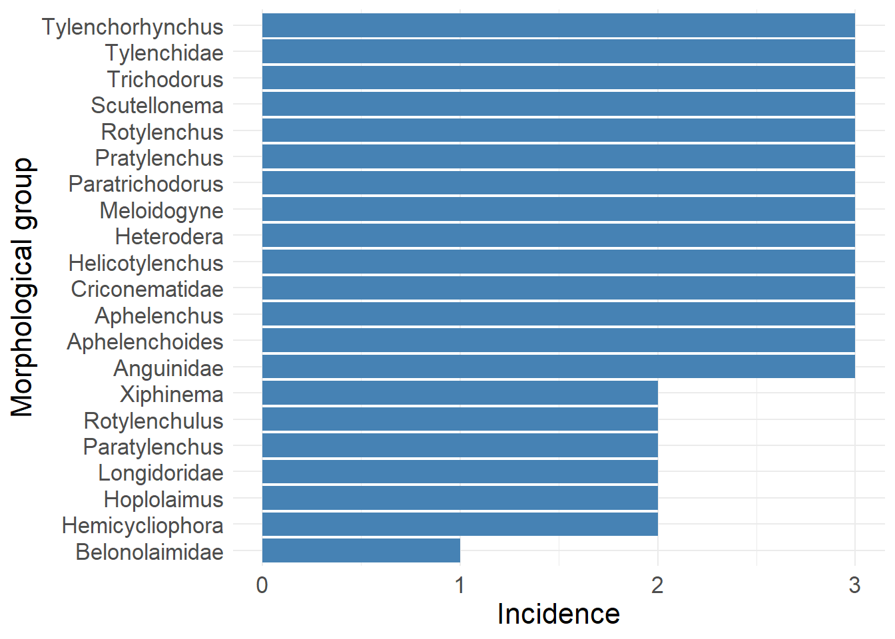
#ggsave("density_genus_region.png",dpi = 600, bg = "white", width = 14, height = 12)Frequency
By group
frequency = population %>%
filter(quantity > 0) %>%
group_by(genus,samples) %>%
summarise(
quantity = sum(quantity)
) %>%
group_by(genus) %>%
summarise(
n = n(),
frequency = n/364
)
frequency# A tibble: 21 × 3
genus n frequency
<chr> <int> <dbl>
1 Anguinidae 97 0.266
2 Aphelenchoides 211 0.580
3 Aphelenchus 288 0.791
4 Belonolaimidae 1 0.00275
5 Criconematidae 78 0.214
6 Helicotylenchus 317 0.871
7 Hemicycliophora 19 0.0522
8 Heterodera 58 0.159
9 Hoplolaimus 3 0.00824
10 Longidoridae 4 0.0110
# ℹ 11 more rowsBy soil
#Argissolo
frequency_soil_argissolo = population %>%
filter(Sampling == "Soil") %>%
filter(soil == "Argissolo") %>%
group_by(samples) %>%
summarise(
n = n()
)
count(frequency_soil_argissolo) #24# A tibble: 1 × 1
n
<int>
1 24frequency_argissolo = population %>%
filter(quantity > 0) %>%
filter(soil == "Argissolo") %>%
group_by(genus,samples) %>%
summarise(
quantity = sum(quantity)
) %>%
group_by(genus) %>%
summarise(
n = n(),
frequency = (n/24)*100
)
frequency_argissolo$soil = replicate(14,"Argissolo")
#Latossolo
frequency_soil_latossolo = population %>%
filter(Sampling == "Soil") %>%
filter(soil == "Latossolo") %>%
group_by(samples) %>%
summarise(
n = n()
)
count(frequency_soil_latossolo) #223# A tibble: 1 × 1
n
<int>
1 223frequency_latossolo = population %>%
filter(quantity > 0) %>%
filter(soil == "Latossolo") %>%
group_by(genus,samples) %>%
summarise(
quantity = sum(quantity)
) %>%
group_by(genus) %>%
summarise(
n = n(),
frequency = (n/223)*100
)
frequency_latossolo$soil = replicate(21,"Latossolo")
#Cambissolo
frequency_soil_cambissolo = population %>%
filter(Sampling == "Soil") %>%
filter(soil == "Cambissolo") %>%
group_by(samples) %>%
summarise(
n = n()
)
count(frequency_soil_cambissolo) #73# A tibble: 1 × 1
n
<int>
1 73frequency_cambissolo = population %>%
filter(quantity > 0) %>%
filter(soil == "Cambissolo") %>%
group_by(genus,samples) %>%
summarise(
quantity = sum(quantity)
) %>%
group_by(genus) %>%
summarise(
n = n(),
frequency = (n/73)*100
)
frequency_cambissolo$soil = replicate(20,"Cambissolo")
soil_frequency = rbind(frequency_argissolo,frequency_latossolo,frequency_cambissolo)
soil_frequency %>%
filter(genus %in% c("Helicotylenchus","Rotylenchulus","Pratylenchus","Aphelenchoides",
"Aphelenchus", "Criconematidae")) %>%
ggplot(aes(reorder(genus,+frequency), frequency))+
geom_bar(stat = "identity", position = "dodge", fill = "steelblue")+
theme_minimal()+
labs(x = "Grupos morfológicos",
y = "Densidade média (nematoides/100 cm³)")+
theme(text = element_text(size = 20))+
facet_wrap(~soil)+
coord_flip()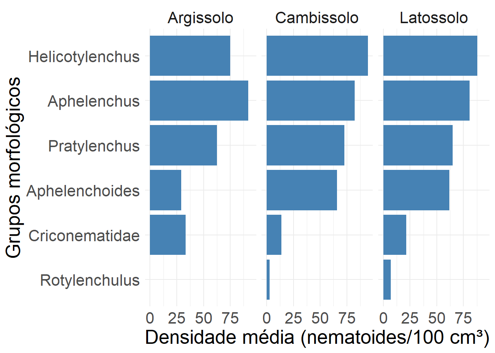
Density
By region
#region
region = population %>%
#filter(Sampling == "Root") %>%
filter(quantity > 0) %>%
group_by(genus,region) %>%
summarise(
quantity = sum(quantity))
population %>%
#filter(Sampling == "Root") %>%
filter(quantity > 0) %>%
group_by(genus,region) %>%
summarise(
quantity = sum(quantity)) %>%
group_by(genus) %>%
summarise(
n = n()
)# A tibble: 21 × 2
genus n
<chr> <int>
1 Anguinidae 6
2 Aphelenchoides 5
3 Aphelenchus 6
4 Belonolaimidae 1
5 Criconematidae 6
6 Helicotylenchus 6
7 Hemicycliophora 4
8 Heterodera 3
9 Hoplolaimus 2
10 Longidoridae 2
# ℹ 11 more rows region[region$genus== "Helicotylenchus",c("presence_region")] <- 6
region[region$genus== "Pratylenchus",c("presence_region")] <- 6
region[region$genus== "Meloidogyne",c("presence_region")] <- 5
region[region$genus== "Aphelenchus",c("presence_region")] <- 6
region[region$genus== "Aphelenchoides",c("presence_region")] <- 5
region[region$genus== "Criconematidae",c("presence_region")] <- 6
region[region$genus== "Rotylenchus",c("presence_region")] <- 5
region[region$genus== "Rotylenchulus",c("presence_region")] <- 4
region[region$genus== "Tylenchidae",c("presence_region")] <- 6
region[region$genus== "Anguinidae",c("presence_region")] <- 6
region[region$genus== "Tylenchorhynchus",c("presence_region")] <- 5
region[region$genus== "Trichodorus",c("presence_region")] <- 4
region[region$genus== "Heterodera",c("presence_region")] <- 3
region[region$genus== "Paratrichodorus",c("presence_region")] <- 3
region[region$genus=="Hemicycliophora",c("presence_region")] <- 4
region[region$genus== "Xiphinema",c("presence_region")] <- 1
region[region$genus== "Paratylenchus",c("presence_region")] <- 1
region[region$genus== "Merlinius",c("presence_region")] <- 1
region[region$genus=="Scutellonema",c("presence_region")] <- 4
region[region$genus== "Longidorus",c("presence_region")] <- 2
region[region$genus== "Hoplolaimus",c("presence_region")] <- 2
region_mean = region %>%
filter(quantity > 0) %>%
group_by(genus,region) %>%
summarise(
mean_density = quantity/presence_region)
region_mean# A tibble: 85 × 3
# Groups: genus [21]
genus region mean_density
<chr> <chr> <dbl>
1 Anguinidae Center 40.7
2 Anguinidae East 104
3 Anguinidae North 17.3
4 Anguinidae Northwest 2
5 Anguinidae South 17.3
6 Anguinidae Southwest 80.7
7 Aphelenchoides Center 82.2
8 Aphelenchoides East 271.
9 Aphelenchoides North 9.8
10 Aphelenchoides South 345.
# ℹ 75 more rows region_density = region_mean %>%
filter(!region %in% c("North","Northwest")) %>%
filter(genus %in% c("Aphelenchus","Aphelenchoides","Criconematidae","Rotylenchulus",
"Pratylenchus","Helicotylenchus")) %>%
ggplot(aes(reorder(genus,+mean_density), mean_density))+
geom_bar(stat = "identity", position = "dodge", fill = "steelblue")+
theme_minimal()+
labs( x = "Morphological group",
y = "Mean density (nematodes/100 cm³)")+
theme(text = element_text(size = 20))+
facet_wrap(~region)+
coord_flip()
#ggsave("mean_density_region.png", bg = "white", dpi = 600, width = 14, height = 10)
region_density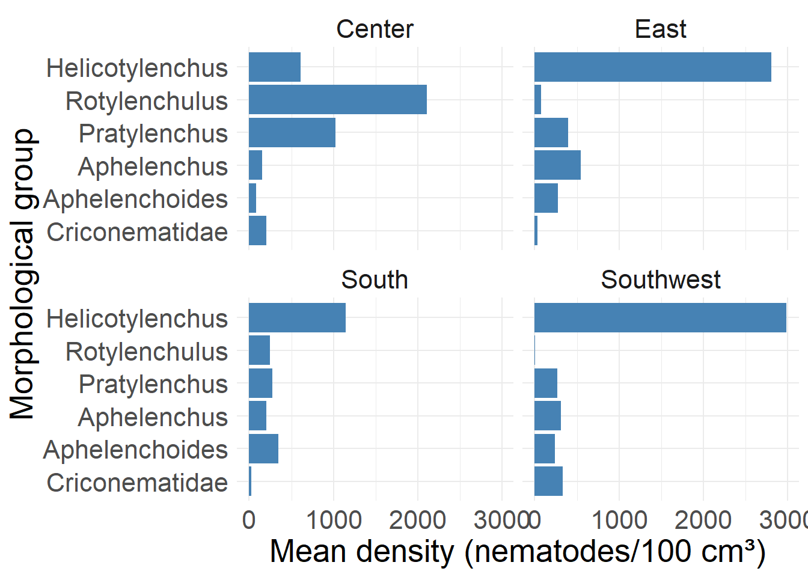
# Supplementary
region_mean %>%
filter(!region %in% c("North","Northwest")) %>%
filter(!genus %in% c("Aphelenchus","Aphelenchoides","Criconematidae","Rotylenchulus",
"Pratylenchus","Helicotylenchus")) %>%
ggplot(aes(reorder(genus,+mean_density), mean_density))+
geom_bar(stat = "identity", position = "dodge", fill = "steelblue")+
theme_minimal()+
labs( x = "Morphological groups",
y = "Mean density (nematoides/cm³)")+
theme(text = element_text(size = 20))+
facet_wrap(~region)+
coord_flip()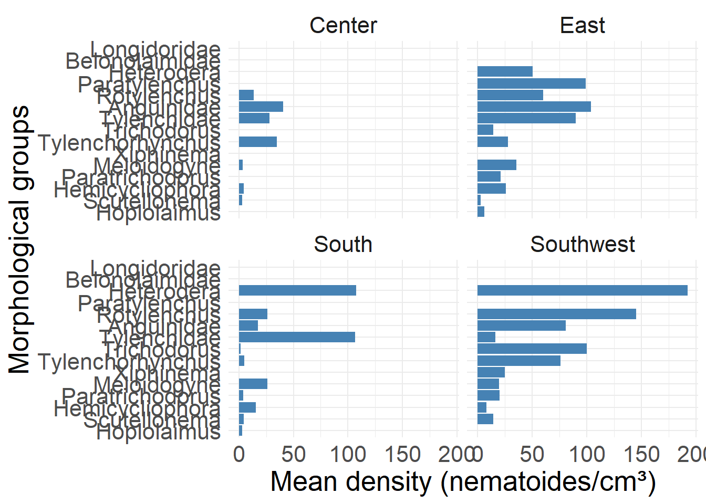
#ggsave("mean_density_region_supplementary.png", bg = "white", dpi = 600, width = 14, height = 10)
region_mean# A tibble: 85 × 3
# Groups: genus [21]
genus region mean_density
<chr> <chr> <dbl>
1 Anguinidae Center 40.7
2 Anguinidae East 104
3 Anguinidae North 17.3
4 Anguinidae Northwest 2
5 Anguinidae South 17.3
6 Anguinidae Southwest 80.7
7 Aphelenchoides Center 82.2
8 Aphelenchoides East 271.
9 Aphelenchoides North 9.8
10 Aphelenchoides South 345.
# ℹ 75 more rowsBy municipality
#city
city = population %>%
#filter(Sampling == "Root") %>%
filter(quantity > 0) %>%
group_by(genus,city) %>%
summarise(
quantity = sum(quantity)
)
city[city$genus== "Helicotylenchus",c("presence_city")] <- 26
city[city$genus== "Pratylenchus",c("presence_city")] <- 25
city[city$genus== "Meloidogyne",c("presence_city")] <- 16
city[city$genus== "Aphelenchus",c("presence_city")] <- 26
city[city$genus== "Aphelenchoides",c("presence_city")] <- 25
city[city$genus== "Criconematidae",c("presence_city")] <- 21
city[city$genus== "Rotylenchus",c("presence_city")] <- 19
city[city$genus== "Rotylenchulus",c("presence_city")] <- 6
city[city$genus== "Tylenchidae",c("presence_city")] <- 22
city[city$genus== "Anguinidae",c("presence_city")] <- 24
city[city$genus== "Tylenchorhynchus",c("presence_city")] <- 17
city[city$genus== "Trichodorus",c("presence_city")] <- 7
city[city$genus== "Heterodera",c("presence_city")] <- 13
city[city$genus== "Paratrichodorus",c("presence_city")] <- 7
city[city$genus== "Hemicycliophora",c("presence_city")] <- 9
city[city$genus== "Xiphinema",c("presence_city")] <- 2
city[city$genus== "Paratylenchus",c("presence_city")] <- 2
city[city$genus== "Merlinius",c("presence_city")] <- 1
city[city$genus=="Scutellonema",c("presence_city")] <- 7
city[city$genus== "Longidorus",c("presence_city")] <- 2
city[city$genus== "Hoplolaimus",c("presence_city")] <- 3
city_mean = city %>%
filter(quantity > 0) %>%
group_by(genus,city) %>%
summarise(
mean_density = quantity/presence_city)
city_mean# A tibble: 280 × 3
# Groups: genus [21]
genus city mean_density
<chr> <chr> <dbl>
1 Anguinidae Abadiânia 0.25
2 Anguinidae Acreúna 2.08
3 Anguinidae Alexânia 1.33
4 Anguinidae Barro Alto 3.79
5 Anguinidae Bom Jesus de Goiás 0.5
6 Anguinidae Cabeceiras 0.792
7 Anguinidae Caiâponia 2.38
8 Anguinidae Ceres 5.62
9 Anguinidae Cristalina 3.54
10 Anguinidae Doverlândia 1.33
# ℹ 270 more rowsBy sample
#Mean density
mean_density = population %>%
group_by(genus,city) %>%
filter(quantity > 0) %>%
summarise(
density = sum(quantity))
#Samples
mean_density[mean_density$genus== "Helicotylenchus",c("presence")] <- 317
mean_density[mean_density$genus== "Pratylenchus",c("presence")] <- 237
mean_density[mean_density$genus== "Meloidogyne",c("presence")] <- 43
mean_density[mean_density$genus== "Aphelenchus",c("presence")] <- 288
mean_density[mean_density$genus== "Aphelenchoides",c("presence")] <- 211
mean_density[mean_density$genus== "Criconematidae",c("presence")] <- 78
mean_density[mean_density$genus== "Rotylenchus",c("presence")] <- 93
mean_density[mean_density$genus== "Rotylenchulus",c("presence")] <- 22
mean_density[mean_density$genus== "Tylenchidae",c("presence")] <- 125
mean_density[mean_density$genus== "Anguinidae",c("presence")] <- 97
mean_density[mean_density$genus== "Tylenchorhynchus",c("presence")] <- 46
mean_density[mean_density$genus== "Trichodorus",c("presence")] <- 17
mean_density[mean_density$genus== "Heterodera",c("presence")] <- 58
mean_density[mean_density$genus== "Paratrichodorus",c("presence")] <- 15
mean_density[mean_density$genus== "Hemicycliophora",c("presence")] <- 19
mean_density[mean_density$genus== "Xiphinema",c("presence")] <- 2
mean_density[mean_density$genus== "Paratylenchus",c("presence")] <- 3
mean_density[mean_density$genus== "Merlinius",c("presence")] <- 1
mean_density[mean_density$genus== "Scutellonema",c("presence")] <- 11
mean_density[mean_density$genus== "Longidorus",c("presence")] <- 4
mean_density[mean_density$genus== "Hoplolaimus",c("presence")] <- 3
mean_density = mean_density %>%
group_by(genus,city) %>%
filter(density > 0) %>%
summarise(
mean_density = density/presence)
mean_density# A tibble: 280 × 3
# Groups: genus [21]
genus city mean_density
<chr> <chr> <dbl>
1 Anguinidae Abadiânia 0.0619
2 Anguinidae Acreúna 0.515
3 Anguinidae Alexânia 0.330
4 Anguinidae Barro Alto 0.938
5 Anguinidae Bom Jesus de Goiás 0.124
6 Anguinidae Cabeceiras 0.196
7 Anguinidae Caiâponia 0.588
8 Anguinidae Ceres 1.39
9 Anguinidae Cristalina 0.876
10 Anguinidae Doverlândia 0.330
# ℹ 270 more rowsBy soil
soil_density = population %>%
filter(soil %in% c("Latossolo","Argissolo","Cambissolo")) %>%
filter(quantity > 0) %>%
group_by(genus,soil) %>%
summarise(
n = n(),
quantity = sum(quantity)) %>%
group_by(genus,soil) %>%
summarise(
mean_density = quantity/n
)
soil_density[soil_density$soil== "Latossolo",c("soil_goias")] <- "Latosol"
soil_density[soil_density$soil== "Cambissolo",c("soil_goias")] <- "Cambisol"
soil_density[soil_density$soil== "Argissolo",c("soil_goias")] <- "Argisol"
# graphic for more expressive
soil_density %>%
filter(genus %in% c("Helicotylenchus","Rotylenchulus","Pratylenchus","Aphelenchoides",
"Aphelenchus", "Criconematidae")) %>%
ggplot(aes(reorder(genus,+mean_density), mean_density))+
geom_bar(stat = "identity", position = "dodge", fill = "steelblue")+
theme_minimal()+
labs(x = "Morphological group",
y = "Mean density (nematodes/100 cm³)")+
theme(text = element_text(size = 20))+
facet_wrap(~soil_goias)+
coord_flip()
ggsave("soil_mean_density.png", dpi = 600, bg = "white", width = 12, height = 8)
soil_density %>%
filter(genus %in% c("Helicotylenchus","Rotylenchulus","Pratylenchus","Aphelenchoides",
"Aphelenchus", "Criconematidae"))# A tibble: 17 × 4
# Groups: genus [6]
genus soil mean_density soil_goias
<chr> <chr> <dbl> <chr>
1 Aphelenchoides Argissolo 7.62 Argisol
2 Aphelenchoides Cambissolo 16.9 Cambisol
3 Aphelenchoides Latossolo 17.9 Latosol
4 Aphelenchus Argissolo 30.5 Argisol
5 Aphelenchus Cambissolo 32.1 Cambisol
6 Aphelenchus Latossolo 20.5 Latosol
7 Criconematidae Argissolo 31.9 Argisol
8 Criconematidae Cambissolo 21.4 Cambisol
9 Criconematidae Latossolo 64.5 Latosol
10 Helicotylenchus Argissolo 540. Argisol
11 Helicotylenchus Cambissolo 132. Cambisol
12 Helicotylenchus Latossolo 86.2 Latosol
13 Pratylenchus Argissolo 83.9 Argisol
14 Pratylenchus Cambissolo 25.0 Cambisol
15 Pratylenchus Latossolo 27.6 Latosol
16 Rotylenchulus Cambissolo 152. Cambisol
17 Rotylenchulus Latossolo 484. Latosol count(soil_density)# A tibble: 21 × 2
# Groups: genus [21]
genus n
<chr> <int>
1 Anguinidae 3
2 Aphelenchoides 3
3 Aphelenchus 3
4 Belonolaimidae 1
5 Criconematidae 3
6 Helicotylenchus 3
7 Hemicycliophora 2
8 Heterodera 3
9 Hoplolaimus 2
10 Longidoridae 2
# ℹ 11 more rowsBy cropping
#library(ggridges)
cropping_density = population %>%
filter(quantity >0) %>%
group_by(genus,cropping) %>%
summarise(
n = n(),
quantity = sum(quantity)) %>%
group_by(genus,cropping) %>%
summarise(
mean_density = quantity/n
)
count(cropping_density)# A tibble: 21 × 2
# Groups: genus [21]
genus n
<chr> <int>
1 Anguinidae 2
2 Aphelenchoides 2
3 Aphelenchus 2
4 Belonolaimidae 1
5 Criconematidae 2
6 Helicotylenchus 2
7 Hemicycliophora 2
8 Heterodera 1
9 Hoplolaimus 2
10 Longidoridae 1
# ℹ 11 more rowscropping_density[cropping_density$cropping== "Corn_soybean",c("cropping_practice")] <- "Succession"
cropping_density[cropping_density$cropping== "Corn_others",c("cropping_practice")] <- "Rotation"
corn_soybean = cropping_density %>%
filter(cropping_practice == "Succession") %>%
ggplot(aes(reorder(genus,+mean_density) , y = mean_density, group = genus)) +
geom_bar(stat = "identity", position = "dodge", fill = "steelblue")+
theme_minimal()+
facet_wrap(~cropping_practice)+
coord_flip()+
labs(x = "Morphological group",
y = "Mean density (nematodes/100 cm³)")+
theme(text = element_text(size = 18))
corn_others = cropping_density %>%
filter(cropping_practice == "Rotation") %>%
ggplot(aes(reorder(genus,+mean_density) , y = mean_density, group = genus)) +
geom_bar(stat = "identity", position = "dodge", fill = "steelblue")+
theme_minimal()+
facet_wrap(~cropping_practice)+
coord_flip()+
labs(x = "",
y = "Mean density (nematodes/100 cm³)")+
theme(text = element_text(size = 18))
plot_grid(corn_soybean,corn_others, label_size = 32)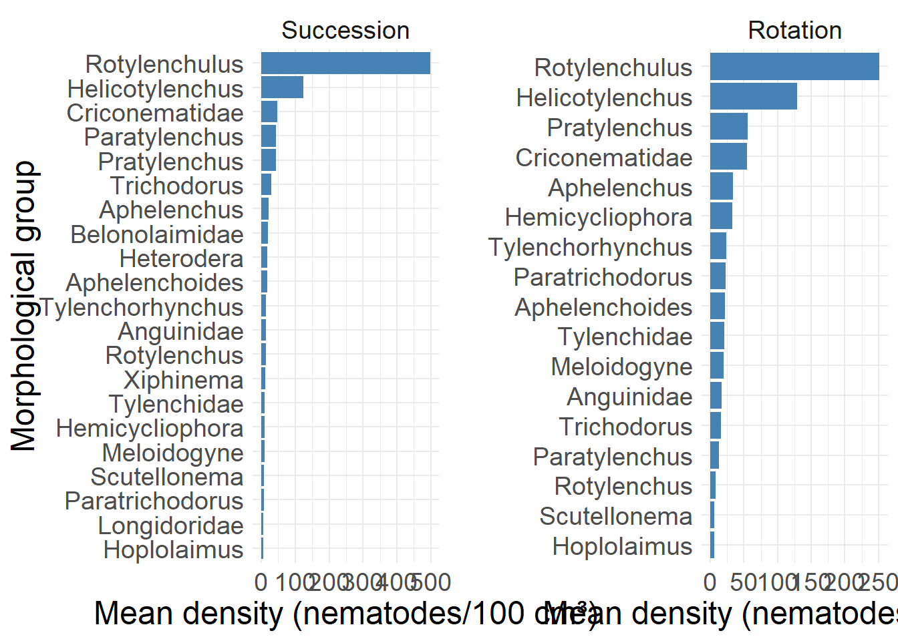
ggsave("cropping_density_histogram.png", dpi = 600, width = 14, height = 8, bg = "white")
cropping_density %>%
# filter(genus %in% c("Hoplolaimus","Xiphinema","Longidorus","Paratrichodorus","Trichodorus",
# "Rotylenchus","Angunidae","Scutellonema","Hemicycliophora")) %>%
ggplot(aes(genus,mean_density))+
geom_bar(stat = "identity", position = "dodge")+
facet_wrap(~cropping)+
coord_flip()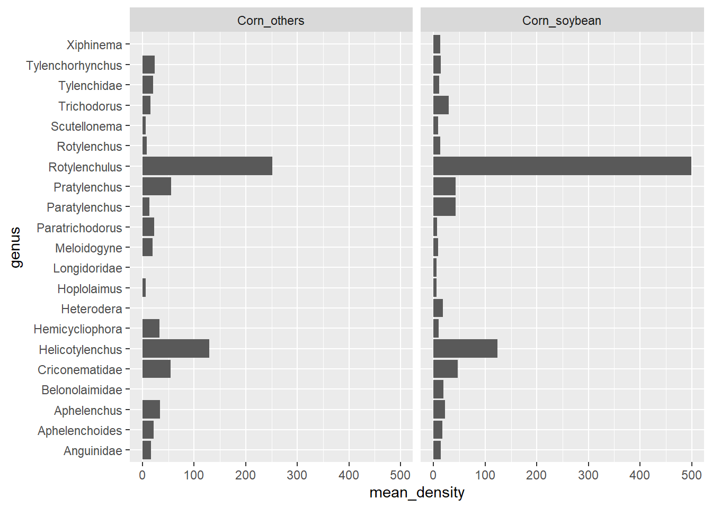
By tillage
tillage_density = population %>%
filter(quantity >0) %>%
group_by(genus,tillage) %>%
summarise(
n = n(),
quantity = sum(quantity)) %>%
group_by(genus,tillage) %>%
summarise(
mean_density = quantity/n
)
count(tillage_density)# A tibble: 21 × 2
# Groups: genus [21]
genus n
<chr> <int>
1 Anguinidae 3
2 Aphelenchoides 3
3 Aphelenchus 3
4 Belonolaimidae 1
5 Criconematidae 3
6 Helicotylenchus 3
7 Hemicycliophora 3
8 Heterodera 2
9 Hoplolaimus 1
10 Longidoridae 2
# ℹ 11 more rowstillage_density %>%
#filter(genus %in% c("Aphelenchus","Aphelenchoides","Criconematidae","Rotylenchulus",
# "Pratylenchus","Helicotylenchus")) %>%
ggplot(aes(reorder(genus,+mean_density), mean_density))+
geom_bar(stat = "identity", position = "dodge", fill = "steelblue")+
theme_minimal()+
labs(x = "Morphological group",
y = "Mean density (nematodes/100 cm³)")+
facet_wrap(~tillage)+
coord_flip()+
theme(text = element_text(size = 18))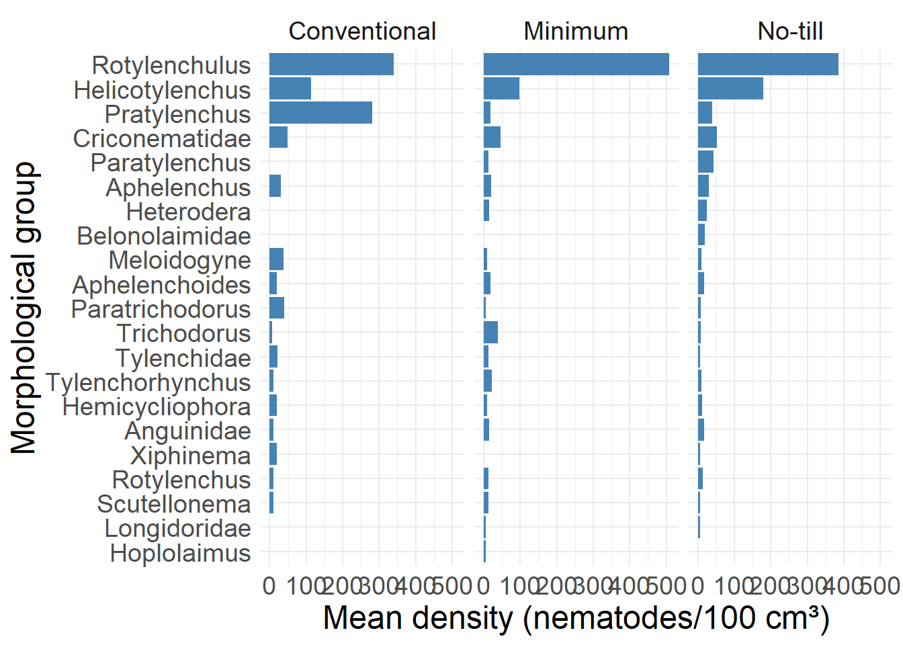
ggsave("tillage_density.png", bg = "white", dpi = 600, height = 8, width = 14)
tillage_density %>%
filter(!genus %in% c("Aphelenchus","Aphelenchus","Aphelenchoides","Criconematidae",
"Helicotylenchus","Rotylenchulus")) %>%
group_by(tillage) %>%
summarise(
mean = mean(mean_density),
sd = sd(mean_density)
)# A tibble: 3 × 3
tillage mean sd
<chr> <dbl> <dbl>
1 Conventional 42.2 80.1
2 Minimum 14.0 8.49
3 No-till 15.2 11.9 Abundance (Supplementary)
By group
#Samples
mean_abundance = population %>%
group_by(genus) %>%
filter(quantity > 0) %>%
summarise(
density = mean(quantity),
sd = sd(quantity)
)
mean_abundance# A tibble: 21 × 3
genus density sd
<chr> <dbl> <dbl>
1 Anguinidae 14.7 17.3
2 Aphelenchoides 17.8 19.3
3 Aphelenchus 23.4 28.8
4 Belonolaimidae 19 NA
5 Criconematidae 48.7 91.3
6 Helicotylenchus 124. 251.
7 Hemicycliophora 11.4 7.62
8 Heterodera 17.8 19.6
9 Hoplolaimus 6 0
10 Longidoridae 6 0
# ℹ 11 more rowsBy municipality
#City
city_abundance = population %>%
group_by(genus,city) %>%
summarise(
mean = mean(quantity)
)
city_abundance# A tibble: 281 × 3
# Groups: genus [21]
genus city mean
<chr> <chr> <dbl>
1 Anguinidae Abadiânia 6
2 Anguinidae Acreúna 10
3 Anguinidae Alexânia 16
4 Anguinidae Barro Alto 30.3
5 Anguinidae Bom Jesus de Goiás 6
6 Anguinidae Cabeceiras 9.5
7 Anguinidae Caiâponia 11.4
8 Anguinidae Ceres 15
9 Anguinidae Cristalina 21.2
10 Anguinidae Doverlândia 16
# ℹ 271 more rows#Máximo especifico
city_abundance %>%
filter(genus == "Criconematidae")# A tibble: 21 × 3
# Groups: genus [1]
genus city mean
<chr> <chr> <dbl>
1 Criconematidae Abadiânia 13
2 Criconematidae Acreúna 8.33
3 Criconematidae Alexânia 8.33
4 Criconematidae Barro Alto 13
5 Criconematidae Bom Jesus de Goiás 6
6 Criconematidae Caiâponia 97.9
7 Criconematidae Ceres 76.1
8 Criconematidae Cristalina 22.5
9 Criconematidae Doverlândia 49.4
10 Criconematidae Firminópolis 6
# ℹ 11 more rows max_nematodae = population %>%
filter(genus == "Criconematidae")
max(max_nematodae$quantity)[1] 679 max_nematodae %>%
filter(quantity > 600)# A tibble: 1 × 17
samples genus quantity Sampling city soil region tillage altitute ph
<chr> <chr> <dbl> <chr> <chr> <chr> <chr> <chr> <dbl> <dbl>
1 CE_03 Criconema… 679 Soil Ceres Lato… Center No-till 585 6.78
# ℹ 7 more variables: ec <dbl>, cropping <chr>, clay <dbl>, sand <dbl>,
# silt <dbl>, latitude <dbl>, longitude <dbl>#Minimo
min_abundance = population %>%
group_by(genus,city) %>%
summarise(
mean = mean(quantity)
)
min_abundance %>%
group_by(genus) %>%
summarise(
min = min(mean)
)# A tibble: 21 × 2
genus min
<chr> <dbl>
1 Anguinidae 6
2 Aphelenchoides 6
3 Aphelenchus 7.56
4 Belonolaimidae 19
5 Criconematidae 6
6 Helicotylenchus 1.8
7 Hemicycliophora 6
8 Heterodera 6
9 Hoplolaimus 6
10 Longidoridae 6
# ℹ 11 more rows #Graphic
city_abundance %>%
filter(genus %in% c("Aphelenchus","Aphelenchoides","Criconematidae",
"Helicotylenchus","Pratylenchus","Rotylenchulus")) %>%
ggplot(aes(city,mean, fill = genus))+
geom_bar(stat = "identity")+
#facet_wrap(~genus)+
coord_flip()+
scale_fill_viridis_d()+
theme_minimal()+
labs(x = "City",
y = "Mean abundance",
fill = "Morphological group")+
theme(text = element_text(size = 14),
legend.position = "right",
legend.text = element_text(face = "italic"))
ggsave("abundance_genus_city.png", dpi = 600, bg = "white", width = 14, height = 8)By city and morphological group
#City and morphological group specific (Helicotylenchus,Rotylenchulus and Pratylenchus) in soil
helicotylenchus_city_abundance= population %>%
filter(quantity > 0) %>%
filter(Sampling == "Soil") %>%
group_by(city) %>%
filter(genus %in% c("Helicotylenchus")) %>%
summarise(
n = n(),
mean = mean(quantity)
)
helicotylenchus_city_abundance# A tibble: 26 × 3
city n mean
<chr> <int> <dbl>
1 Abadiânia 6 157
2 Acreúna 15 57.4
3 Alexânia 8 193.
4 Alto Paraiso 5 139.
5 Barro Alto 9 312.
6 Bom Jesus de Goiás 15 166.
7 Cabeceiras 5 67.6
8 Caiâponia 15 242.
9 Ceres 9 89
10 Cristalina 26 135.
# ℹ 16 more rowsrotylenchulus_city_abundance = population %>%
filter(quantity > 0) %>%
filter(Sampling == "Soil") %>%
group_by(city) %>%
filter(genus %in% c("Rotylenchulus")) %>%
summarise(
n = n(),
mean = mean(quantity)
)
rotylenchulus_city_abundance# A tibble: 6 × 3
city n mean
<chr> <int> <dbl>
1 Barro Alto 1 13
2 Ceres 13 648.
3 Cristalina 1 299
4 Jataí 1 6
5 Mineiros 1 13
6 Vianópolis 5 197.pratylenchus_city_abundance = population %>%
filter(quantity > 0) %>%
filter(Sampling == "Soil") %>%
group_by(city) %>%
filter(genus %in% c("Pratylenchus")) %>%
summarise(
n = n(),
mean = mean(quantity)
)
pratylenchus_city_abundance# A tibble: 25 × 3
city n mean
<chr> <int> <dbl>
1 Abadiânia 3 26
2 Acreúna 6 13.8
3 Alexânia 7 18.6
4 Alto Paraiso 3 19.3
5 Barro Alto 4 22.8
6 Bom Jesus de Goiás 11 11.6
7 Cabeceiras 3 17.3
8 Caiâponia 9 9.67
9 Ceres 15 93.5
10 Cristalina 17 12.4
# ℹ 15 more rows#City and morphological without Rotylenchulus and Pratylenchusin soil
group_city_abundance_nonexpressive = population %>%
filter(quantity > 0) %>%
group_by(genus,city) %>%
filter(Sampling == "Soil") %>%
filter(!genus %in% c("Helicotylenchus","Rotylenchulus")) %>%
summarise(
n = n(),
mean = mean(quantity)
)
group_city_abundance_nonexpressive# A tibble: 228 × 4
# Groups: genus [19]
genus city n mean
<chr> <chr> <int> <dbl>
1 Anguinidae Acreúna 5 10
2 Anguinidae Alexânia 2 16
3 Anguinidae Bom Jesus de Goiás 2 6
4 Anguinidae Cabeceiras 2 9.5
5 Anguinidae Caiâponia 3 8.33
6 Anguinidae Ceres 8 16.1
7 Anguinidae Cristalina 3 19.7
8 Anguinidae Firminópolis 3 6
9 Anguinidae Formosa 3 23.7
10 Anguinidae Luziânia 12 24.9
# ℹ 218 more rowsmax(group_city_abundance_nonexpressive$mean)[1] 119min(group_city_abundance_nonexpressive$mean)[1] 6#Root samples
root_city_abundance= population %>%
filter(quantity > 0) %>%
filter(Sampling == "Root") %>%
group_by(city) %>%
summarise(
n = n(),
mean = mean(quantity)
)
root_city_abundance# A tibble: 25 × 3
city n mean
<chr> <int> <dbl>
1 Abadiânia 14 58.4
2 Acreúna 8 7.75
3 Alexânia 12 9.33
4 Alto Paraiso 1 6
5 Barro Alto 15 21.1
6 Bom Jesus de Goiás 26 11.7
7 Cabeceiras 4 122.
8 Caiâponia 32 15.6
9 Ceres 17 276
10 Cristalina 57 16.0
# ℹ 15 more rowsBy tillage
#Tillage mean
tillage_mean = population %>%
filter(quantity>0) %>%
group_by(tillage) %>%
summarise(
mean = mean(quantity)
)
#Tillage and genus mean
tillage_density = population %>%
filter(quantity >0) %>%
group_by(genus,tillage) %>%
summarise(
n = n(),
mean = mean(quantity),
median = median(quantity),
sd = sd(quantity)
)
tilage_density_nematode = tillage_density %>%
filter(genus %in% c("Helicotylenchus","Rotylenchulus","Pratylenchus","Aphelenchoides",
"Aphelenchus", "Criconematidae")) %>%
ggplot(aes(reorder(tillage,+mean),mean, group = tillage))+
geom_bar(stat = "identity", position = "dodge", fill = "steelblue")+
facet_grid(~genus)+
theme_bw()+
theme(text = element_text(size = 20),
axis.text.x = element_text(angle = 45, hjust = 1),
legend.background = element_rect(fill = "white",colour = "white"))+
labs(x = "Tillage practice",
y = "Mean abundance")
ggsave("tillage_abundance.png", dpi = 600, width = 26, height = 12, bg = "white")# Supplementary
tillage_density %>%
filter(!genus %in% c("Helicotylenchus","Rotylenchulus","Pratylenchus","Aphelenchoides",
"Aphelenchus", "Criconematidae","Merlinius","Hoplolaimus")) %>%
ggplot(aes(reorder(tillage,+mean),mean, group = tillage))+
geom_bar(stat = "identity", position = "dodge", fill = "steelblue")+
facet_grid(~genus)+
theme_bw()+
theme(text = element_text(size = 20),
axis.text.x = element_text(angle = 45, hjust = 1),
legend.background = element_rect(fill = "white",colour = "white"))+
labs(x = "Tillage practice",
y = "Mean abundance")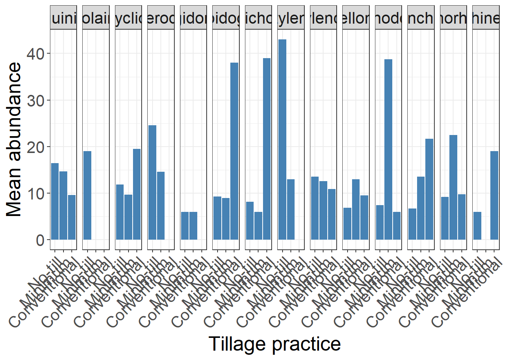
ggsave("tillage_supplementary.png", dpi = 600, width = 26, height = 12, bg = "white")Mapping
aphelenchus = mean_density %>%
filter(genus == "Aphelenchus") %>%
group_by(city) %>%
summarise(
quantity = mean(mean_density))
aphelenchus["genus"]= c("Aphelenchus","Aphelenchus","Aphelenchus","Aphelenchus","Aphelenchus",
"Aphelenchus","Aphelenchus","Aphelenchus","Aphelenchus","Aphelenchus",
"Aphelenchus","Aphelenchus","Aphelenchus","Aphelenchus","Aphelenchus",
"Aphelenchus","Aphelenchus","Aphelenchus","Aphelenchus","Aphelenchus",
"Aphelenchus","Aphelenchus","Aphelenchus","Aphelenchus","Aphelenchus",
"Aphelenchus")
aphelenchoides = mean_density %>%
filter(genus == "Aphelenchoides") %>%
group_by(city) %>%
summarise(
quantity = mean(mean_density))
aphelenchoides["genus"]= c("Aphelenchoides","Aphelenchoides","Aphelenchoides","Aphelenchoides",
"Aphelenchoides","Aphelenchoides","Aphelenchoides","Aphelenchoides",
"Aphelenchoides","Aphelenchoides","Aphelenchoides","Aphelenchoides",
"Aphelenchoides","Aphelenchoides","Aphelenchoides","Aphelenchoides",
"Aphelenchoides","Aphelenchoides","Aphelenchoides","Aphelenchoides",
"Aphelenchoides","Aphelenchoides","Aphelenchoides","Aphelenchoides",
"Aphelenchoides")
rotylenchulus = mean_density %>%
filter(genus == "Rotylenchulus") %>%
group_by(city) %>%
summarise(
quantity = mean(mean_density))
rotylenchulus["genus"]= c("Rotylenchulus","Rotylenchulus","Rotylenchulus","Rotylenchulus",
"Rotylenchulus","Rotylenchulus")
helicotylenchus = mean_density %>%
filter(genus == "Helicotylenchus") %>%
group_by(city) %>%
summarise(
quantity = mean(mean_density))
helicotylenchus["genus"]=c("Helicotylenchus","Helicotylenchus","Helicotylenchus",
"Helicotylenchus",
"Helicotylenchus","Helicotylenchus","Helicotylenchus","Helicotylenchus",
"Helicotylenchus","Helicotylenchus","Helicotylenchus","Helicotylenchus",
"Helicotylenchus","Helicotylenchus","Helicotylenchus","Helicotylenchus",
"Helicotylenchus","Helicotylenchus","Helicotylenchus","Helicotylenchus",
"Helicotylenchus","Helicotylenchus","Helicotylenchus","Helicotylenchus",
"Helicotylenchus","Helicotylenchus")
pratylenchus = mean_density %>%
filter(genus == "Pratylenchus") %>%
group_by(city) %>%
summarise(
quantity = mean(mean_density))
pratylenchus["genus"] = c("Pratylenchus","Pratylenchus","Pratylenchus","Pratylenchus",
"Pratylenchus","Pratylenchus","Pratylenchus","Pratylenchus",
"Pratylenchus","Pratylenchus","Pratylenchus","Pratylenchus",
"Pratylenchus","Pratylenchus","Pratylenchus","Pratylenchus",
"Pratylenchus","Pratylenchus","Pratylenchus","Pratylenchus",
"Pratylenchus","Pratylenchus","Pratylenchus","Pratylenchus",
"Pratylenchus")
criconematidae = mean_density %>%
filter(genus == "Criconematidae") %>%
group_by(city) %>%
summarise(
quantity = mean(mean_density))
criconematidae["genus"] = c("Criconematidae","Criconematidae","Criconematidae","Criconematidae",
"Criconematidae","Criconematidae","Criconematidae","Criconematidae",
"Criconematidae","Criconematidae","Criconematidae","Criconematidae",
"Criconematidae","Criconematidae","Criconematidae","Criconematidae",
"Criconematidae","Criconematidae","Criconematidae","Criconematidae",
"Criconematidae")
all_genus_map = rbind(aphelenchus,aphelenchoides,rotylenchulus,helicotylenchus,
pratylenchus,criconematidae)all_genus_map[all_genus_map$city== "Abadiânia",c("lat")] <- -16.1941
all_genus_map[all_genus_map$city== "Abadiânia",c("long")] <- -48.7001
all_genus_map[all_genus_map$city== "Acreúna",c("lat")] <- -17.3788
all_genus_map[all_genus_map$city== "Acreúna",c("long")] <- -50.3885
all_genus_map[all_genus_map$city== "Alexânia",c("lat")] <- -16.0783
all_genus_map[all_genus_map$city== "Alexânia",c("long")] <- -48.5097
all_genus_map[all_genus_map$city== "Alto Paraiso",c("lat")] <- -14.1336
all_genus_map[all_genus_map$city== "Alto Paraiso",c("long")] <- -47.5215
all_genus_map[all_genus_map$city== "Barro Alto",c("lat")] <- -14.9684
all_genus_map[all_genus_map$city== "Barro Alto",c("long")] <- -48.9201
all_genus_map[all_genus_map$city== "Bom Jesus de Goiás",c("lat")] <- -18.203
all_genus_map[all_genus_map$city== "Bom Jesus de Goiás",c("long")] <- -49.7341
all_genus_map[all_genus_map$city== "Cabeceiras",c("lat")] <- -15.7961
all_genus_map[all_genus_map$city== "Cabeceiras",c("long")] <- -46.927
all_genus_map[all_genus_map$city== "Caiâponia",c("lat")] <- -16.9539
all_genus_map[all_genus_map$city== "Caiâponia",c("long")] <- -51.8159
all_genus_map[all_genus_map$city== "Ceres",c("lat")] <- -15.3136
all_genus_map[all_genus_map$city== "Ceres",c("long")] <- -49.6033
all_genus_map[all_genus_map$city== "Cristalina",c("lat")] <- -16.7679
all_genus_map[all_genus_map$city== "Cristalina",c("long")] <- -47.6131
all_genus_map[all_genus_map$city== "Doverlândia",c("lat")] <- -16.6987
all_genus_map[all_genus_map$city== "Doverlândia",c("long")] <- -52.3189
all_genus_map[all_genus_map$city== "Firminópolis",c("lat")] <- -16.5825
all_genus_map[all_genus_map$city== "Firminópolis",c("long")] <- -50.3024
all_genus_map[all_genus_map$city== "Formosa",c("lat")] <- -15.537
all_genus_map[all_genus_map$city== "Formosa",c("long")] <- -47.3357
all_genus_map[all_genus_map$city== "Jataí",c("lat")] <- -17.8759
all_genus_map[all_genus_map$city== "Jataí",c("long")] <- -51.7214
all_genus_map[all_genus_map$city== "Luziânia",c("lat")] <- -16.2345
all_genus_map[all_genus_map$city== "Luziânia",c("long")] <- -47.9167
all_genus_map[all_genus_map$city== "Mineiros",c("lat")] <- -17.5787
all_genus_map[all_genus_map$city== "Mineiros",c("long")] <- -52.5424
all_genus_map[all_genus_map$city== "Montividiu",c("lat")] <- -17.4446
all_genus_map[all_genus_map$city== "Montividiu",c("long")] <- -51.1737
all_genus_map[all_genus_map$city== "Nova Crixas",c("lat")] <- -14.1048
all_genus_map[all_genus_map$city== "Nova Crixas",c("long")] <- -50.3397
all_genus_map[all_genus_map$city== "Planaltina",c("lat")] <- -15.4839
all_genus_map[all_genus_map$city== "Planaltina",c("long")] <- -47.6393
all_genus_map[all_genus_map$city== "Porangatu",c("lat")] <- -13.4312
all_genus_map[all_genus_map$city== "Porangatu",c("long")] <- -49.1428
all_genus_map[all_genus_map$city== "Portelândia",c("lat")] <- -17.3575
all_genus_map[all_genus_map$city== "Portelândia",c("long")] <- -52.6744
all_genus_map[all_genus_map$city== "Rio Verde",c("lat")] <- -17.7972
all_genus_map[all_genus_map$city== "Rio Verde",c("long")] <- -50.90
all_genus_map[all_genus_map$city== "São Miguel do Passo Quatro",c("lat")] <- -17.057
all_genus_map[all_genus_map$city== "São Miguel do Passo Quatro",c("long")] <- -48.6573
all_genus_map[all_genus_map$city== "Serranópolis",c("lat")] <- -18.2938
all_genus_map[all_genus_map$city== "Serranópolis",c("long")] <- -51.9695
all_genus_map[all_genus_map$city== "Silvânia",c("lat")] <- -16.643
all_genus_map[all_genus_map$city== "Silvânia",c("long")] <- -48.6041
all_genus_map[all_genus_map$city== "Vianópolis",c("lat")] <- -16.7434
all_genus_map[all_genus_map$city== "Vianópolis",c("long")] <- -48.5144
location = all_genus_map |>
filter(genus == "Helicotylenchus")
#write_xlsx(location, "location.xlsx")By city
library(ggplot2)
library(sf)
library(ggrepel)
library(dplyr)
city = all_genus_map %>%
filter(genus == "Aphelenchus")
# Carregar shapefile corretamente com `sf`
brazil <- st_read("data/BRA_adm1.shp")Reading layer `BRA_adm1' from data source
`C:\Users\ricar\OneDrive\Documentos\GitHub\paper-PPN-characterization\PPN\data\BRA_adm1.shp'
using driver `ESRI Shapefile'
Simple feature collection with 27 features and 16 fields
Geometry type: MULTIPOLYGON
Dimension: XY
Bounding box: xmin: -73.98971 ymin: -33.74708 xmax: -28.84694 ymax: 5.264878
Geodetic CRS: WGS 84brazil_df <- brazil %>%
st_as_sf() %>% # Mantém o formato sf
st_cast("MULTIPOLYGON") %>% # Se necessário, força a estrutura correta
as.data.frame() # Converte para data.frame sem criar coordenadas duplicadas
# Plot corrigido sem linhas extras
ggplot() +
geom_sf(data = brazil, fill = NA, color = "grey50") + # Usa `geom_sf()` diretamente
geom_jitter(
data = city,
aes(x = long, y = lat),
alpha = 1/2, size = 2.5
) +
coord_fixed() +
theme_minimal() +
theme(legend.position = "none") +
labs(x = "Longitude", y = "Latitude") +
geom_label_repel(
data = city,
aes(x = long, y = lat, label = city),
box.padding = unit(.01, "lines"),
point.padding = unit(.8, "lines"),
fontface = "bold", segment.size = .5, size = 2
) +
coord_sf(xlim = c(-55, -45), ylim = c(-20, -12.5))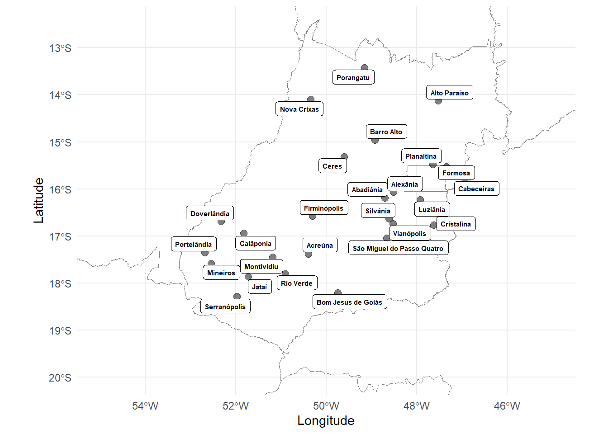
ggsave("fig/city.png", width = 6, height = 6, dpi = 600, bg = "white")By groups
library(ggplot2)
library(sf)
library(dplyr)
# Carregar shapefile no formato sf
brazil <- st_read("data/BRA_adm1.shp")Reading layer `BRA_adm1' from data source
`C:\Users\ricar\OneDrive\Documentos\GitHub\paper-PPN-characterization\PPN\data\BRA_adm1.shp'
using driver `ESRI Shapefile'
Simple feature collection with 27 features and 16 fields
Geometry type: MULTIPOLYGON
Dimension: XY
Bounding box: xmin: -73.98971 ymin: -33.74708 xmax: -28.84694 ymax: 5.264878
Geodetic CRS: WGS 84# Verificar se `all_genus_map` já está em sf
if ("sf" %in% class(all_genus_map)) {
all_genus_map <- all_genus_map %>%
mutate(long = st_coordinates(.)[,1], lat = st_coordinates(.)[,2]) %>%
st_drop_geometry() # Remove a geometria para evitar conflitos
}
# Plot com ggplot2
ggplot() +
# Plot do mapa do Brasil
geom_sf(data = brazil, fill = NA, color = "grey50") +
# Plot dos pontos (dados de nematoides)
geom_jitter(
data = all_genus_map,
aes(x = long, y = lat, size = quantity),
alpha = 1/2
) +
# Ajuste da projeção
coord_sf(xlim = c(-55, -45), ylim = c(-20, -12.5)) +
# Ajuste de temas e rótulos
theme_minimal() +
theme(legend.position = "top", panel.spacing = unit(1, "lines")) +
labs(x = "Longitude", y = "Latitude") +
scale_size_continuous(name = "Mean density") +
# Facet para dividir por gênero de nematoide
facet_wrap(~genus)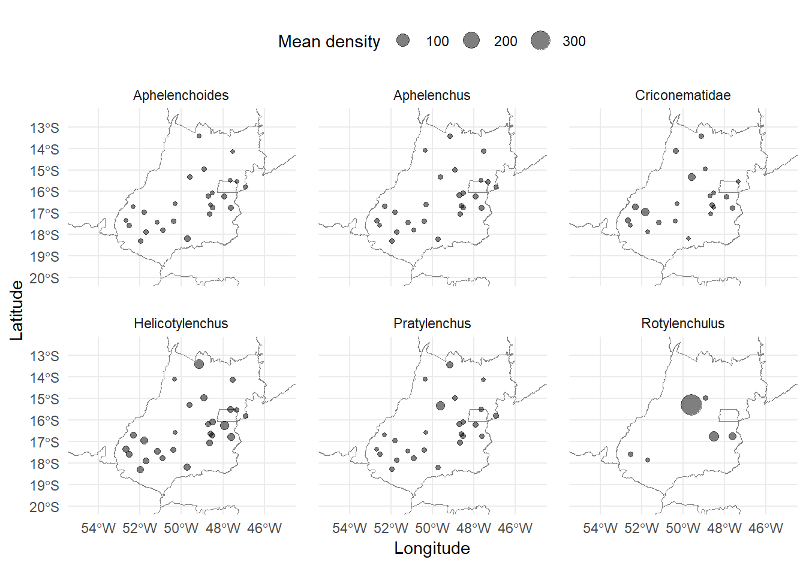
ggsave("groups_goias.png", width = 6, height = 6, dpi = 600, bg = "white")By tillage
tillage_map = population %>%
group_by(city,tillage) %>%
summarise(
n = n()
)tillage_map[tillage_map$city== "Abadiânia",c("lat")] <- -16.1941
tillage_map[tillage_map$city== "Abadiânia",c("long")] <- -48.7001
tillage_map[tillage_map$city== "Acreúna",c("lat")] <- -17.3788
tillage_map[tillage_map$city== "Acreúna",c("long")] <- -50.3885
tillage_map[tillage_map$city== "Alexânia",c("lat")] <- -16.0783
tillage_map[tillage_map$city== "Alexânia",c("long")] <- -48.5097
tillage_map[tillage_map$city== "Alto Paraiso",c("lat")] <- -14.1336
tillage_map[tillage_map$city== "Alto Paraiso",c("long")] <- -47.5215
tillage_map[tillage_map$city== "Barro Alto",c("lat")] <- -14.9684
tillage_map[tillage_map$city== "Barro Alto",c("long")] <- -48.9201
tillage_map[tillage_map$city== "Bom Jesus de Goiás",c("lat")] <- -18.203
tillage_map[tillage_map$city== "Bom Jesus de Goiás",c("long")] <- -49.7341
tillage_map[tillage_map$city== "Cabeceiras",c("lat")] <- -15.7961
tillage_map[tillage_map$city== "Cabeceiras",c("long")] <- -46.927
tillage_map[tillage_map$city== "Caiâponia",c("lat")] <- -16.9539
tillage_map[tillage_map$city== "Caiâponia",c("long")] <- -51.8159
tillage_map[tillage_map$city== "Ceres",c("lat")] <- -15.3136
tillage_map[tillage_map$city== "Ceres",c("long")] <- -49.6033
tillage_map[tillage_map$city== "Cristalina",c("lat")] <- -16.7679
tillage_map[tillage_map$city== "Cristalina",c("long")] <- -47.6131
tillage_map[tillage_map$city== "Doverlândia",c("lat")] <- -16.6987
tillage_map[tillage_map$city== "Doverlândia",c("long")] <- -52.3189
tillage_map[tillage_map$city== "Firminópolis",c("lat")] <- -16.5825
tillage_map[tillage_map$city== "Firminópolis",c("long")] <- -50.3024
tillage_map[tillage_map$city== "Formosa",c("lat")] <- -15.537
tillage_map[tillage_map$city== "Formosa",c("long")] <- -47.3357
tillage_map[tillage_map$city== "Jataí",c("lat")] <- -17.8759
tillage_map[tillage_map$city== "Jataí",c("long")] <- -51.7214
tillage_map[tillage_map$city== "Luziânia",c("lat")] <- -16.2345
tillage_map[tillage_map$city== "Luziânia",c("long")] <- -47.9167
tillage_map[tillage_map$city== "Mineiros",c("lat")] <- -17.5787
tillage_map[tillage_map$city== "Mineiros",c("long")] <- -52.5424
tillage_map[tillage_map$city== "Montividiu",c("lat")] <- -17.4446
tillage_map[tillage_map$city== "Montividiu",c("long")] <- -51.1737
tillage_map[tillage_map$city== "Nova Crixas",c("lat")] <- -14.1048
tillage_map[tillage_map$city== "Nova Crixas",c("long")] <- -50.3397
tillage_map[tillage_map$city== "Planaltina",c("lat")] <- -15.4839
tillage_map[tillage_map$city== "Planaltina",c("long")] <- -47.6393
tillage_map[tillage_map$city== "Porangatu",c("lat")] <- -13.4312
tillage_map[tillage_map$city== "Porangatu",c("long")] <- -49.1428
tillage_map[tillage_map$city== "Portelândia",c("lat")] <- -17.3575
tillage_map[tillage_map$city== "Portelândia",c("long")] <- -52.6744
tillage_map[tillage_map$city== "Rio Verde",c("lat")] <- -17.7972
tillage_map[tillage_map$city== "Rio Verde",c("long")] <- -50.90
tillage_map[tillage_map$city== "São Miguel do Passo Quatro",c("lat")] <- -17.057
tillage_map[tillage_map$city== "São Miguel do Passo Quatro",c("long")] <- -48.6573
tillage_map[tillage_map$city== "Serranópolis",c("lat")] <- -18.2938
tillage_map[tillage_map$city== "Serranópolis",c("long")] <- -51.9695
tillage_map[tillage_map$city== "Silvânia",c("lat")] <- -16.643
tillage_map[tillage_map$city== "Silvânia",c("long")] <- -48.6041
tillage_map[tillage_map$city== "Vianópolis",c("lat")] <- -16.7434
tillage_map[tillage_map$city== "Vianópolis",c("long")] <- -48.5144
write_xlsx(tillage_map, "tillage_map.xlsx")library(ggplot2)
library(sf)
library(dplyr)
# Carregar shapefile do Brasil no formato sf
brazil <- st_read("data/BRA_adm1.shp")Reading layer `BRA_adm1' from data source
`C:\Users\ricar\OneDrive\Documentos\GitHub\paper-PPN-characterization\PPN\data\BRA_adm1.shp'
using driver `ESRI Shapefile'
Simple feature collection with 27 features and 16 fields
Geometry type: MULTIPOLYGON
Dimension: XY
Bounding box: xmin: -73.98971 ymin: -33.74708 xmax: -28.84694 ymax: 5.264878
Geodetic CRS: WGS 84# Verificar se `tillage_map` já está em sf e extrair coordenadas
if ("sf" %in% class(tillage_map)) {
tillage_map <- tillage_map %>%
mutate(long = st_coordinates(.)[,1], lat = st_coordinates(.)[,2]) %>%
st_drop_geometry() # Remove a geometria para evitar conflitos com ggplot2
}
# Criar o gráfico corrigido
tillage <- ggplot() +
# Plot do shapefile do Brasil
geom_sf(data = brazil, fill = NA, color = "grey50") +
# Plot dos pontos com coloração baseada em "tillage"
geom_jitter(
data = tillage_map,
aes(x = long, y = lat, color = tillage),
alpha = 1/2, size = 2
) +
# Ajuste da projeção e escala
coord_sf(xlim = c(-55, -45), ylim = c(-20, -12.5)) +
# Ajuste de temas e rótulos
theme_minimal() +
theme(legend.position = "right", panel.spacing = unit(1, "lines")) +
labs(x = "", y = "Latitude", color = "Tillage") +
scale_size_continuous(name = "Mean density / 100 cm³")
# Exibir o gráfico
tillage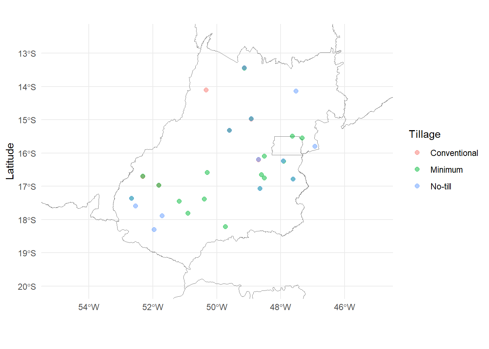
By soil
soil_map = population %>%
group_by(city,soil) %>%
summarise(
n = n()
)
soil_map# A tibble: 34 × 3
# Groups: city [26]
city soil n
<chr> <chr> <int>
1 Abadiânia Latossolo 52
2 Acreúna Latossolo 114
3 Alexânia Cambissolo 75
4 Alto Paraiso Latossolo 28
5 Barro Alto Chernossolo 62
6 Bom Jesus de Goiás Latossolo 134
7 Cabeceiras Latossolo 31
8 Caiâponia Latossolo 123
9 Ceres Chernossolo 39
10 Ceres Latossolo 133
# ℹ 24 more rowssoil_map[soil_map$soil== "Latossolo",c("soil_goias")] <- "Latosol"
soil_map[soil_map$soil== "Chernossolo",c("soil_goias")] <- "Chernosol"
soil_map[soil_map$soil== "Cambissolo",c("soil_goias")] <- "Cambisol"
soil_map[soil_map$soil== "Gleissolo",c("soil_goias")] <- "Gleisol"
soil_map[soil_map$soil== "Argissolo",c("soil_goias")] <- "Argisol"
soil_map[soil_map$soil== "Neossolo",c("soil_goias")] <- "Neosol"soil_map[soil_map$city== "Abadiânia",c("lat")] <- -16.1941
soil_map[soil_map$city== "Abadiânia",c("long")] <- -48.7001
soil_map[soil_map$city== "Acreúna",c("lat")] <- -17.3788
soil_map[soil_map$city== "Acreúna",c("long")] <- -50.3885
soil_map[soil_map$city== "Alexânia",c("lat")] <- -16.0783
soil_map[soil_map$city== "Alexânia",c("long")] <- -48.5097
soil_map[soil_map$city== "Alto Paraiso",c("lat")] <- -14.1336
soil_map[soil_map$city== "Alto Paraiso",c("long")] <- -47.5215
soil_map[soil_map$city== "Barro Alto",c("lat")] <- -14.9684
soil_map[soil_map$city== "Barro Alto",c("long")] <- -48.9201
soil_map[soil_map$city== "Bom Jesus de Goiás",c("lat")] <- -18.203
soil_map[soil_map$city== "Bom Jesus de Goiás",c("long")] <- -49.7341
soil_map[soil_map$city== "Cabeceiras",c("lat")] <- -15.7961
soil_map[soil_map$city== "Cabeceiras",c("long")] <- -46.927
soil_map[soil_map$city== "Caiâponia",c("lat")] <- -16.9539
soil_map[soil_map$city== "Caiâponia",c("long")] <- -51.8159
soil_map[soil_map$city== "Ceres",c("lat")] <- -15.3136
soil_map[soil_map$city== "Ceres",c("long")] <- -49.6033
soil_map[soil_map$city== "Cristalina",c("lat")] <- -16.7679
soil_map[soil_map$city== "Cristalina",c("long")] <- -47.6131
soil_map[soil_map$city== "Doverlândia",c("lat")] <- -16.6987
soil_map[soil_map$city== "Doverlândia",c("long")] <- -52.3189
soil_map[soil_map$city== "Firminópolis",c("lat")] <- -16.5825
soil_map[soil_map$city== "Firminópolis",c("long")] <- -50.3024
soil_map[soil_map$city== "Formosa",c("lat")] <- -15.537
soil_map[soil_map$city== "Formosa",c("long")] <- -47.3357
soil_map[soil_map$city== "Jataí",c("lat")] <- -17.8759
soil_map[soil_map$city== "Jataí",c("long")] <- -51.7214
soil_map[soil_map$city== "Luziânia",c("lat")] <- -16.2345
soil_map[soil_map$city== "Luziânia",c("long")] <- -47.9167
soil_map[soil_map$city== "Mineiros",c("lat")] <- -17.5787
soil_map[soil_map$city== "Mineiros",c("long")] <- -52.5424
soil_map[soil_map$city== "Montividiu",c("lat")] <- -17.4446
soil_map[soil_map$city== "Montividiu",c("long")] <- -51.1737
soil_map[soil_map$city== "Nova Crixas",c("lat")] <- -14.1048
soil_map[soil_map$city== "Nova Crixas",c("long")] <- -50.3397
soil_map[soil_map$city== "Planaltina",c("lat")] <- -15.4839
soil_map[soil_map$city== "Planaltina",c("long")] <- -47.6393
soil_map[soil_map$city== "Porangatu",c("lat")] <- -13.4312
soil_map[soil_map$city== "Porangatu",c("long")] <- -49.1428
soil_map[soil_map$city== "Portelândia",c("lat")] <- -17.3575
soil_map[soil_map$city== "Portelândia",c("long")] <- -52.6744
soil_map[soil_map$city== "Rio Verde",c("lat")] <- -17.7972
soil_map[soil_map$city== "Rio Verde",c("long")] <- -50.90
soil_map[soil_map$city== "São Miguel do Passo Quatro",c("lat")] <- -17.057
soil_map[soil_map$city== "São Miguel do Passo Quatro",c("long")] <- -48.6573
soil_map[soil_map$city== "Serranópolis",c("lat")] <- -18.2938
soil_map[soil_map$city== "Serranópolis",c("long")] <- -51.9695
soil_map[soil_map$city== "Silvânia",c("lat")] <- -16.643
soil_map[soil_map$city== "Silvânia",c("long")] <- -48.6041
soil_map[soil_map$city== "Vianópolis",c("lat")] <- -16.7434
soil_map[soil_map$city== "Vianópolis",c("long")] <- -48.5144
write_xlsx(soil_map,"soil_map.xlsx")library(ggplot2)
library(sf)
library(dplyr)
# Carregar shapefile do Brasil no formato sf
brazil <- st_read("data/BRA_adm1.shp")Reading layer `BRA_adm1' from data source
`C:\Users\ricar\OneDrive\Documentos\GitHub\paper-PPN-characterization\PPN\data\BRA_adm1.shp'
using driver `ESRI Shapefile'
Simple feature collection with 27 features and 16 fields
Geometry type: MULTIPOLYGON
Dimension: XY
Bounding box: xmin: -73.98971 ymin: -33.74708 xmax: -28.84694 ymax: 5.264878
Geodetic CRS: WGS 84# Verificar se `soil_map` já está em sf e extrair coordenadas
if ("sf" %in% class(soil_map)) {
soil_map <- soil_map %>%
mutate(long = st_coordinates(.)[,1], lat = st_coordinates(.)[,2]) %>%
st_drop_geometry() # Remove a geometria para evitar conflitos com ggplot2
}
# Criar o gráfico corrigido
soil <- ggplot() +
# Plot do shapefile do Brasil
geom_sf(data = brazil, fill = NA, color = "grey50") +
# Plot dos pontos com coloração baseada no tipo de solo
geom_jitter(
data = soil_map,
aes(x = long, y = lat, color = soil_goias),
alpha = 1/2, size = 2
) +
# Ajuste da projeção e escala
coord_sf(xlim = c(-55, -45), ylim = c(-20, -12.5)) +
# Ajuste de temas e rótulos
theme_minimal() +
theme(legend.position = "right", panel.spacing = unit(1, "lines")) +
labs(x = "Longitude", y = "Latitude", color = "Soil type") +
scale_size_continuous(name = "Mean abundance / 100 cm³")
# Exibir o gráfico
soil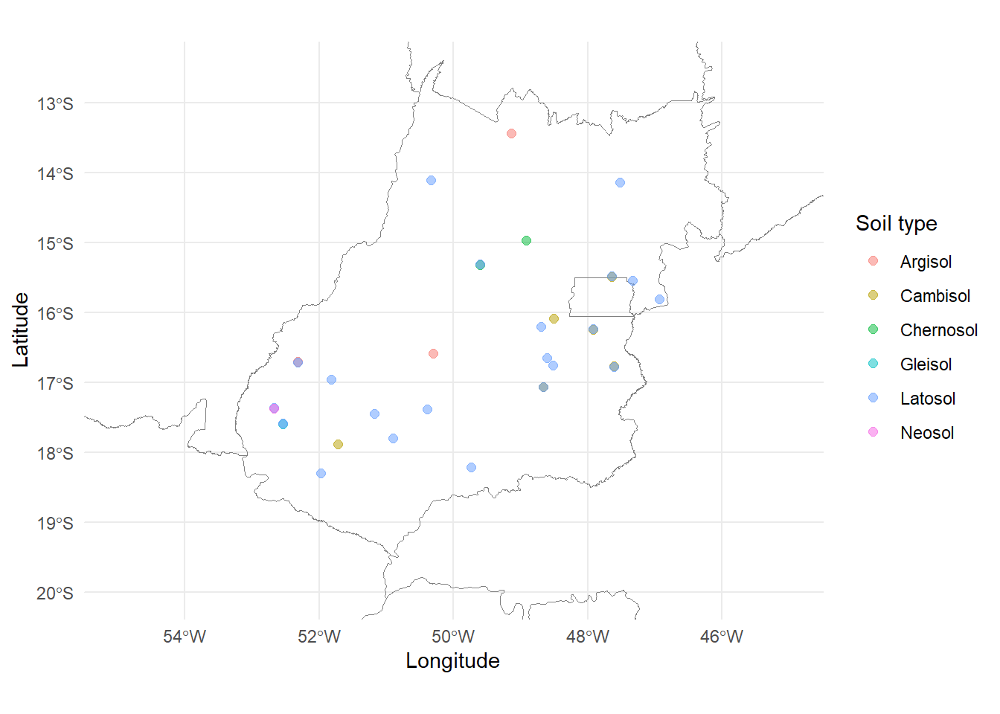
plot_grid(tillage,soil, ncol = 1, label_size = 12,
labels = c("(a)", "(b)"))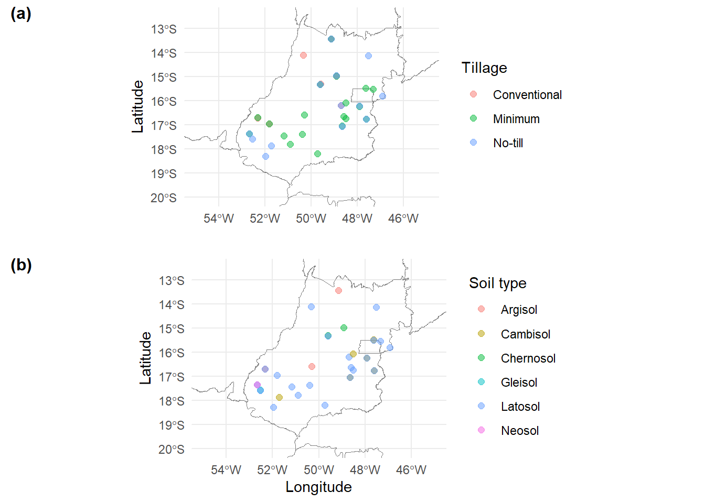
ggsave("fig/practice_mixed.png", width = 5, height = 6, dpi = 600, bg = "white")